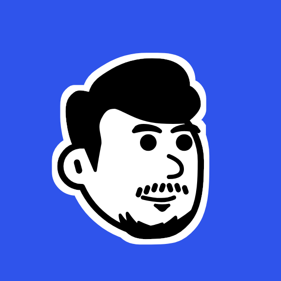

Projeto 1: Site de Portfólio
Desenvolvi esse site de portfólio para mostrar meus trabalhos e habilidades em desenvolvimento de software...
Confira também os bastidores do meu homelab: Homelab.

Olá! Meu nome é Luis David e sou um desenvolvedor apaixonado por tecnologia.
Atualmente sou um analista de suporte técnico, mas estou em transição para a área de desenvolvimento de software, segurança da informação e operações/infraestrutura.
Desenvolvi esse site de portfólio para mostrar meus trabalhos e habilidades em desenvolvimento de software...
Confira também os bastidores do meu homelab: Homelab.
Desenvolvi uma calculadora simples em JavaScript para praticar lógica de programação. Suporta operações básicas como adição, subtração, multiplicação e divisão.
A lógica e o código CLI estãoaqui, mas o front-end está disponível nesta página. Clique no botão abaixo para testar.
Um jogo clássico onde o usuário tenta adivinhar um número entre 1 e 10 com limite de tentativas. Desenvolvido para exercitar condicionais e loops.
A lógica e o código CLI estão aqui, mas o front-end está disponível nesta página. Clique no botão abaixo para testar.
Organizador de tarefas diárias feito com Vite e React. Permite criar, gerenciar e mover tarefas entre status.
O código fonte está disponível aqui e o projeto pode ser visto aqui.
Plataforma web de testes (em desenvolvimento). Possibilita a criação de contas, upload de bancos de questões e acompanhamento de desempenho.
O código fonte está disponível aqui e projeto pode ser acessado aqui.